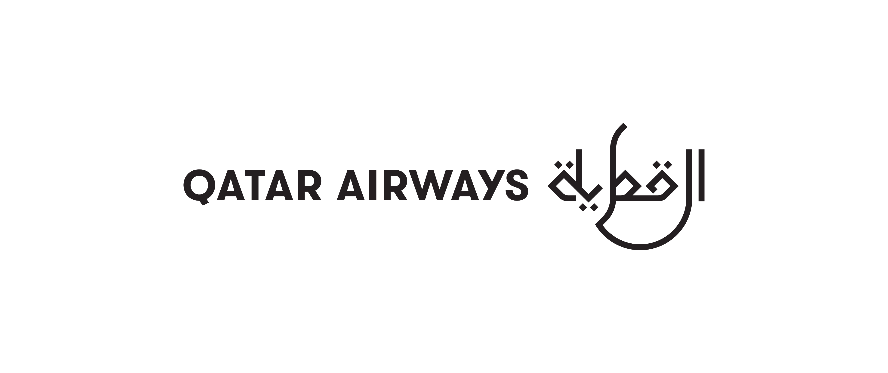
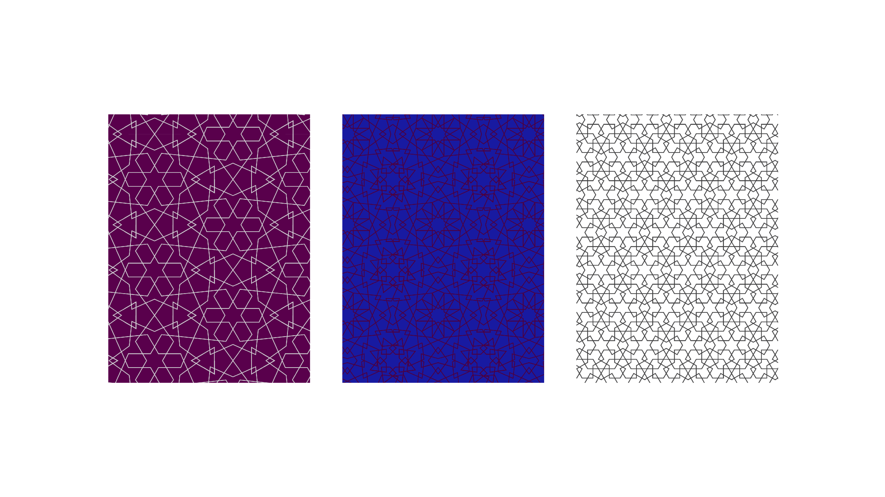
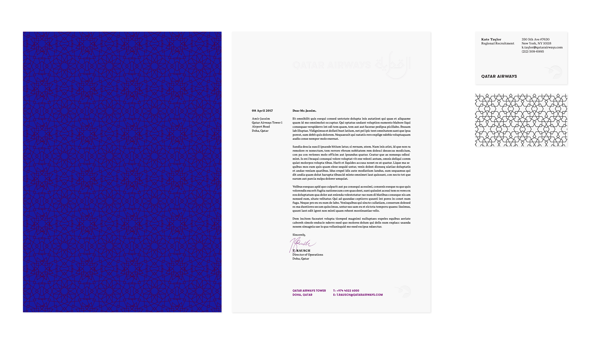
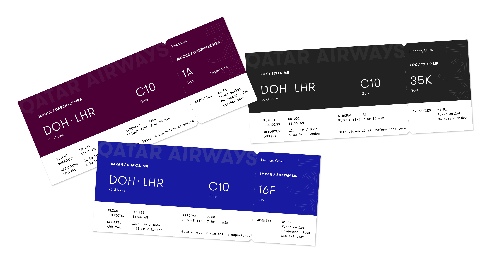
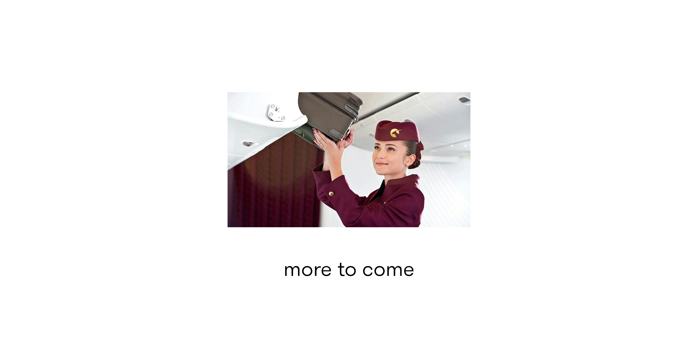

In this conceptual rebrand for Qatar Airways, the logo takes the form of an oryx—both a simplification of the current mark and a symbol of grace and momentum. A new logotype is composed of an English wordmark side-by-side with a custom Arabic wordmark, giving equal weight to the brand's Arabic roots and its international reach. Additionally, since English reads right-to-left and Arabic reads left-to-right, readers of both languages will find their native tongue dominant. The brand also incorporates a set of geometric patterns, adapted from traditional Arabic architecture. The resulting identity salutes the airline's heritage, yet positions it as a contemporary, global carrier.
**Work in progress.**
Mood board created for the project.
    